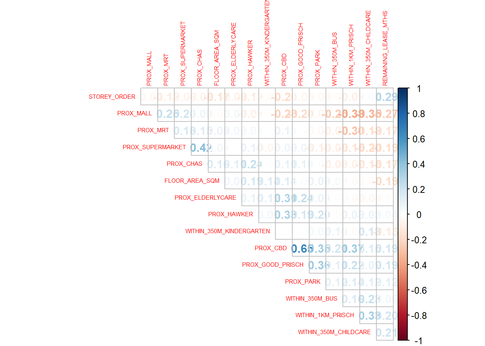
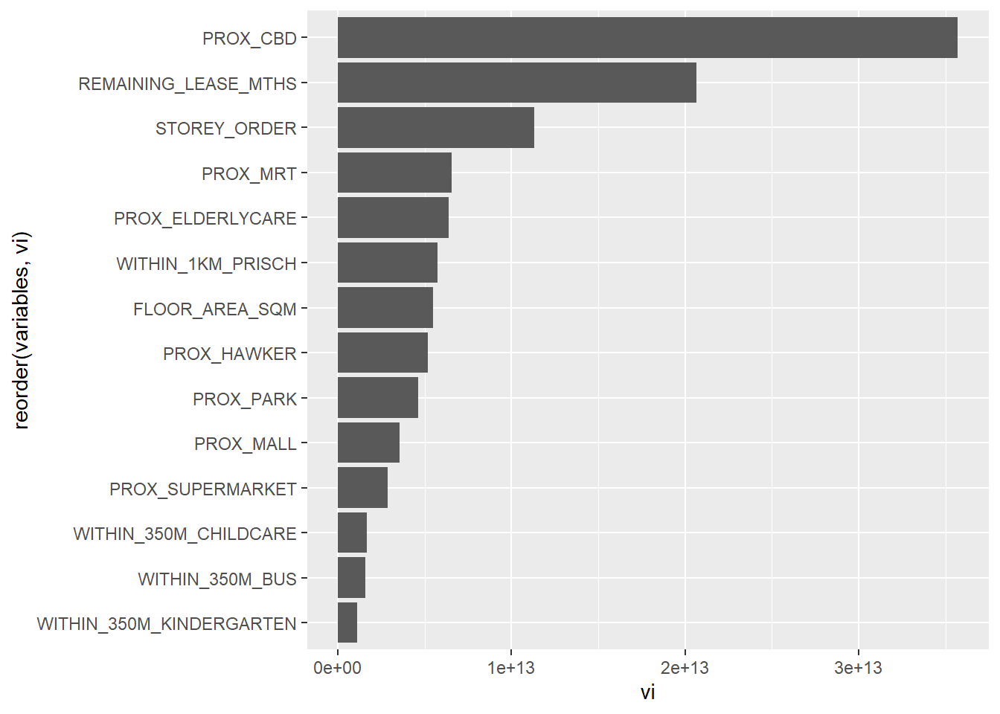

pacman::p_load(sf, spdep, GWmodel, SpatialML, tmap, tidymodels, tidyverse, gtsummary, rpart, rpart.plot, ggstatsplot, performance)In-class Exercise 11: Geographically Weighted Predictive Models
R packages
New packages:
SpatialML: calculate random forest
tidymodels: includes other packages, used for modern modelling ESPECIALLY predictive modelling
- rsample: data sampling, part of tidymodel
rpart: used for recursive partitioning
ggstatsplot: correlation matrix and performance analysis
Data import
rs_sf <- read_rds("data/rds/HDB_resale.rds")Data sampling
set.seed(1234)
resale_split <- initial_split(rs_sf,
prop = 5/10,) #proportion is 50% here
#no longer needed after the initial split
train_data <- training(resale_split)
test_data <- testing(resale_split)write_rds(train_data, "data/rds/train_data.rds")
write_rds(test_data, "data/rds/test_data.rds")# these are sf object: it is a tibblr dataframe
train_data <- read_rds("data/rds/train_data.rds")
test_data <- read_rds("data/rds/test_data.rds")# DF is base r, tibblr df is for tidyverse
train_df <- train_data %>%
st_drop_geometry() %>%
as.data.frame()
test_df <- test_data %>%
st_drop_geometry() %>%
as.data.frame()Computing Correlation Matrix
mdata_nogeo <- rs_sf %>%
st_drop_geometry()
corrplot::corrplot(cor(mdata_nogeo[, 2:17]),
diag = FALSE,
order = "AOE",
tl.pos = "td",
tl.cex = 0.5,
method = "number",
type = "upper")
Revising mlr model
train_df <- train_df %>%
select(-c(PROX_CHAS))
train_data <- train_data %>%
select(-c(PROX_CHAS))
test_df <- test_df %>%
select(-c(PROX_CHAS))
test_data <- test_data %>%
select(-c(PROX_CHAS))Non-spatial mlr
rs_mlr <- lm(formula = RESALE_PRICE ~ FLOOR_AREA_SQM +
STOREY_ORDER + REMAINING_LEASE_MTHS +
PROX_CBD + PROX_ELDERLYCARE + PROX_HAWKER +
PROX_MRT + PROX_PARK + PROX_MALL +
PROX_SUPERMARKET + WITHIN_350M_KINDERGARTEN +
WITHIN_350M_CHILDCARE + WITHIN_350M_BUS +
WITHIN_1KM_PRISCH,
data=train_data)
summary(rs_mlr)
Call:
lm(formula = RESALE_PRICE ~ FLOOR_AREA_SQM + STOREY_ORDER + REMAINING_LEASE_MTHS +
PROX_CBD + PROX_ELDERLYCARE + PROX_HAWKER + PROX_MRT + PROX_PARK +
PROX_MALL + PROX_SUPERMARKET + WITHIN_350M_KINDERGARTEN +
WITHIN_350M_CHILDCARE + WITHIN_350M_BUS + WITHIN_1KM_PRISCH,
data = train_data)
Residuals:
Min 1Q Median 3Q Max
-179178 -39031 -1868 36751 327631
Coefficients:
Estimate Std. Error t value Pr(>|t|)
(Intercept) 109413.550 11990.543 9.125 < 2e-16 ***
FLOOR_AREA_SQM 2725.663 102.698 26.541 < 2e-16 ***
STOREY_ORDER 14192.913 384.118 36.949 < 2e-16 ***
REMAINING_LEASE_MTHS 346.996 5.187 66.893 < 2e-16 ***
PROX_CBD -16943.081 227.058 -74.620 < 2e-16 ***
PROX_ELDERLYCARE -13972.191 1120.481 -12.470 < 2e-16 ***
PROX_HAWKER -17968.486 1437.798 -12.497 < 2e-16 ***
PROX_MRT -32448.233 1961.837 -16.540 < 2e-16 ***
PROX_PARK -6753.096 1671.444 -4.040 5.39e-05 ***
PROX_MALL -14003.731 2266.148 -6.180 6.75e-10 ***
PROX_SUPERMARKET -25566.285 4720.643 -5.416 6.28e-08 ***
WITHIN_350M_KINDERGARTEN 8740.242 721.483 12.114 < 2e-16 ***
WITHIN_350M_CHILDCARE -4614.476 398.810 -11.571 < 2e-16 ***
WITHIN_350M_BUS 990.698 252.454 3.924 8.77e-05 ***
WITHIN_1KM_PRISCH -8438.093 553.831 -15.236 < 2e-16 ***
---
Signif. codes: 0 '***' 0.001 '**' 0.01 '*' 0.05 '.' 0.1 ' ' 1
Residual standard error: 61040 on 7935 degrees of freedom
Multiple R-squared: 0.7405, Adjusted R-squared: 0.7401
F-statistic: 1618 on 14 and 7935 DF, p-value: < 2.2e-16GWRM
Spatial object
Only need to change inti an SP object for calibrating GWRM.
Coordinate extraction
coords <- st_coordinates(rs_sf)
coords_train <- st_coordinates(train_data)
coords_test <- st_coordinates(test_data)set.seed(1234)
rs_rp <- rpart(
formula = RESALE_PRICE ~ FLOOR_AREA_SQM +
STOREY_ORDER + REMAINING_LEASE_MTHS +
PROX_CBD + PROX_ELDERLYCARE + PROX_HAWKER +
PROX_MRT + PROX_PARK + PROX_MALL +
PROX_SUPERMARKET + WITHIN_350M_KINDERGARTEN +
WITHIN_350M_CHILDCARE + WITHIN_350M_BUS +
WITHIN_1KM_PRISCH,
data= train_df)
rs_rpn= 7950
node), split, n, deviance, yval
* denotes terminal node
1) root 7950 1.139546e+14 433705.6
2) PROX_CBD>=7.974483 6665 4.472144e+13 403736.0
4) REMAINING_LEASE_MTHS< 1020.5 4228 1.573100e+13 370187.4
8) PROX_CBD>=14.48068 1820 2.748388e+12 337963.6 *
9) PROX_CBD< 14.48068 2408 9.664405e+12 394542.6 *
5) REMAINING_LEASE_MTHS>=1020.5 2437 1.597594e+13 461940.1
10) PROX_CBD>=10.40657 2331 9.762718e+12 451754.4
20) PROX_CBD>=14.20377 1088 3.345588e+12 426109.1 *
21) PROX_CBD< 14.20377 1243 5.075243e+12 474201.8 *
11) PROX_CBD< 10.40657 106 6.532500e+11 685929.1 *
3) PROX_CBD< 7.974483 1285 3.219685e+13 589151.4
6) REMAINING_LEASE_MTHS< 930.5 745 6.613365e+12 486637.6
12) FLOOR_AREA_SQM< 98.5 451 2.446537e+12 442460.5 *
13) FLOOR_AREA_SQM>=98.5 294 1.936449e+12 554405.7 *
7) REMAINING_LEASE_MTHS>=930.5 540 6.952722e+12 730582.5
14) REMAINING_LEASE_MTHS< 1071.5 314 2.461969e+12 676641.3 *
15) REMAINING_LEASE_MTHS>=1071.5 226 2.307737e+12 805527.4 *rpart.plot(rs_rp)
Random forest
set.seed(1234)
#ranger is used in spatial machine learning
rs_rf <- ranger(
formula = RESALE_PRICE ~ FLOOR_AREA_SQM +
STOREY_ORDER + REMAINING_LEASE_MTHS +
PROX_CBD + PROX_ELDERLYCARE + PROX_HAWKER +
PROX_MRT + PROX_PARK + PROX_MALL +
PROX_SUPERMARKET + WITHIN_350M_KINDERGARTEN +
WITHIN_350M_CHILDCARE + WITHIN_350M_BUS +
WITHIN_1KM_PRISCH,
data= train_df,
importance = "impurity")
rs_rfRanger result
Call:
ranger(formula = RESALE_PRICE ~ FLOOR_AREA_SQM + STOREY_ORDER + REMAINING_LEASE_MTHS + PROX_CBD + PROX_ELDERLYCARE + PROX_HAWKER + PROX_MRT + PROX_PARK + PROX_MALL + PROX_SUPERMARKET + WITHIN_350M_KINDERGARTEN + WITHIN_350M_CHILDCARE + WITHIN_350M_BUS + WITHIN_1KM_PRISCH, data = train_df, importance = "impurity")
Type: Regression
Number of trees: 500
Sample size: 7950
Number of independent variables: 14
Mtry: 3
Target node size: 5
Variable importance mode: impurity
Splitrule: variance
OOB prediction error (MSE): 774008152
R squared (OOB): 0.9460084 We can extract the importance as a data frame.
vi <- as.data.frame(rs_rf$variable.importance)
vi$variables <- rownames(vi) #creates a new row using rownames named variables
vi <- vi %>%
rename(vi = "rs_rf$variable.importance")ggplot(data = vi,
aes(x = vi,
y = reorder(variables, vi)))+ ## without reorder it will display alphabetically
geom_bar(stat="identity") #identity is needed to tell it how to aggregate the data (treats each row as a single observation)
The most important variable that contributes the most to the prediction is PROX_CBD.
Note
If the variable importance are all close to zero with only one important variable, that means that your model has problem and its because your data DOES NOT allow the model to make use of other variables. This usually happens because of a complete separation/quasi-separation issue (exclude the great predictor first)
Tip
To reduce the computational time of bandwidth training:
- Set minimum/maximum bandwidths
Predictive modelling
test_df <- cbind(test_df, coords_test)%>% st_drop_geometry()grf_pred is a vector and needs to be converted to df
grf_pred <- read_rds("data/models/grf_pred.rds")
grf_pred_df <- as.data.frame(grf_pred)test_pred <- test_df %>%
select(RESALE_PRICE) %>%
cbind(grf_pred_df)Saving predicted output of random forest and prepping final data table
rf_pred <- predict(rs_rf, test_df)rf_pred_df <- as.data.frame(rf_pred$predictions) %>%
rename(rf_pred = "rf_pred$predictions")Use Yardstick to get a test comparison
yardstick::rmse(test_pred, RESALE_PRICE, mlr_pred)#pivoting
test_pred <- read_rds("data/models/test_pred.rds")
mc <- test_pred %>%
pivot_longer(cols = c(2:4),
names_to = "models",
values_to = "predicted")# check the website for in class exercises later, not working
mc <- group_by("models") %>%
yardstick::rmse(RESALE_PRICE, mlr_pred)ggplot(data = test_pred,
aes(x=grf_pred,
y=RESALE_PRICE))+
geom_point()